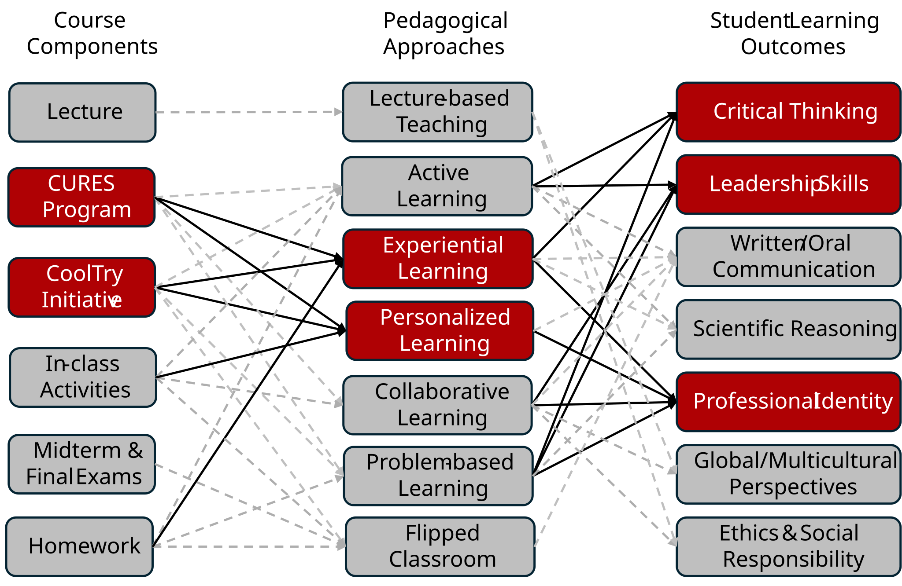
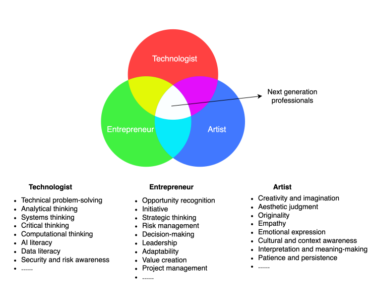

Course Structure
Dr. Jay is passionate about teaching and mentoring students. He strives to create an engaging and inclusive learning environment that fosters critical thinking, leadership skills and career readiness development in cybersecurity, computer science and beyond. He is committed to helping students develop the skills and knowledge they need to succeed in their academic and professional careers. His teaching philosophy is centered on active learning, collaboration, and real-world application of concepts. All is best illustrated through the following flowchart:

- Collaborative Undergraduate Research Experience (CURES) Program: Our CURES Program leverages experiential learning to integrate authentic research experiences into undergraduate classrooms. The program empowers our talented undergraduates with a full-spectrum experience in the research lifecycle—strengthening hands-on technical skills, sharpening critical thinking abilities, and cultivating leadership mindsets. As a powerhouse for next-generation leaders in science, technology and beyond, the CURES Program prepares students to thrive in advanced research environments and innovation-driven careers.
- CoolTry Initiative:This program aimes to support students in their academic and professional identity development. It offers students opportunities to explore their passions and interests in computer science, cybersecurity and beyond. This is a program that tailors experiences to individual student goals and aspirations.
The TEA Skills Model
The rapid adoption of AI technologies is changing what it means for computing-related careers. Technological fluency, such as knowledge and skills in programming, data literacy, cybersecurity awareness, AI literacy, systems thinking, and the ability to use technical tools responsibly, still remains essential, but it is no longer sufficient by itself. Computing professionals are increasingly expected to identify meaningful problems, design human-centered solutions, communicate ideas creatively, adapt to uncertain environments, and transform prototypes into socially and economically valuable outcomes. The TEA (Technological fluence, Entrepreneurial mindset, Artistic sensibility) skills model provides a framework that integrates these capabilities.

Courses Dr. Jay Has Taught
Courses Dr. Jay has taught, including the most recent semesters in which each course was offered:
- CSC 340 Cybersecurity Essentials (Fall 2025)
- CYB 300 Developing & Deploying CyberPrg (Fall 2025)
- CYB 260 Network Defenses & Countermeasures (Spring 2026)
- CYB 240 Ethical Hacking & PenTesting (Fall 2026)
- CYB 220 Cybersecurity Risk Management (Fall 2026)
- CSC 240 Operating Systems (Fall 2026)
- CYB 200 Operating Systems & Cybersecurity (Spring 2026)
- CSC 140 Discrete Structures (Fall 2026)
- CYB 110 Cybercrime and Cyberterrorism (Spring 2024)